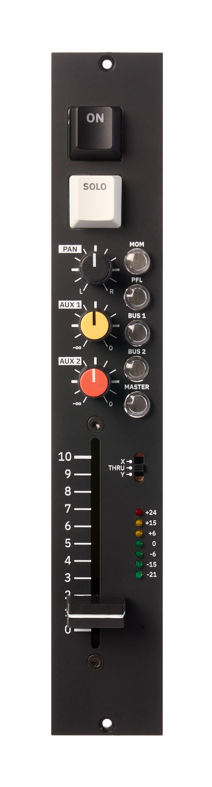
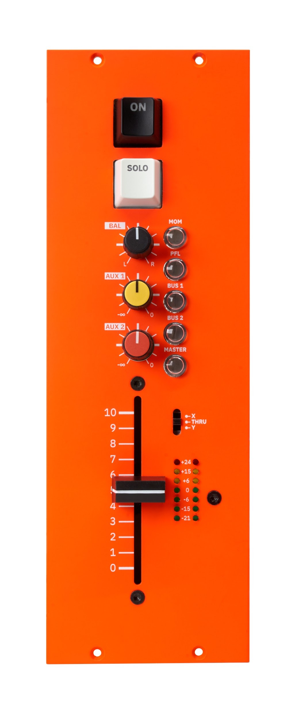

MX-F-101 / 102 Channel control

MX-F-101
Mono Channel Control

MX-F-102
Stereo Channel Control
Channel Control Modules: Mono and Stereo Faders
The Channel Control Modules, available in Mono and Stereo versions, are the heart of the MX Modular mixer. These modules offer precise control and versatile routing for each channel, designed with performance and flexibility in mind. Both versions are nearly identical, with slight variations in functionality for mono and stereo operation.
Core Technology
- THAT VCA-Based Design: Ensures plop-free programmed muting, smooth fader control, and seamless integration with the crossfader.
Features (From Top to Bottom)
- ON Button:
- Turns the channel ON or OFF.
- When off, the channel is muted.
- SOLO Button:
- Solos the channel when pressed, muting all other channels for focused monitoring or interesting performances.
- Pan/Balance Control:
- Mono Version: Pan knob controls the channel’s L/R position on the master bus.
- Stereo Version: Balance knob adjusts the relative L/R volume sent to the master bus.
- AUX 1/2 Send Knobs:
- Control the amount of this channel sent to AUX 1 and AUX 2.
- The sends are post-fader, ensuring they follow the channel’s volume adjustments.
- Fader:
- Controls the channel’s level sent to the all master, busses and auxes.
- Full up position corresponds to 0 dB gain.
- Lit Buttons on the Right:
- MOM (Momentary Mode):
- Switches the behavior of the ON and SOLO buttons between:
- Latched Mode: Stays on or off when toggled.
- Momentary Mode: Only active while the button is held down.
- Ideal for live performance, allowing you to "play" a channel rhythmically by tapping the ON button like a synth trigger.
- Switches the behavior of the ON and SOLO buttons between:
- PFL (Pre-Fader Listen):
- Routes the channel to the PFL Bus (pre-panning) for monitoring without affecting the main mix.
- BUS 1/2 Buttons:
- Routes the channel to BUS 1 and/or BUS 2.
- Multiple routing options can be used simultaneously, enabling parallel processing.
- Master Button:
- Routes the channel to the master bus.
- Can be combined with other routing buttons for parallel signal distribution.
- MOM (Momentary Mode):
- X-Fader Switch:
- 3-Position Toggle:
- X: Channel is only audible when the crossfader is in the X or middle position.
- Y: Channel is only audible when the crossfader is in the Y or middle position.
- Through: Crossfader position has no effect on the channel.
- 3-Position Toggle:
- VU Meter:
- A dedicated VU meter for each channel allows you to monitor the incoming signal level into the fader.
- Ensures precise gain staging and prevents clipping or weak signals.
Key Highlights:
- Parallel Routing: The BUS 1/2, Master, and AUX sends can all be used simultaneously, making the mixer highly versatile for parallel processing.
- Performance-Oriented Features:
- Momentary Mode for live rhythm-based channel toggling.
- Smooth Crossfader Integration: Channels can be dynamically assigned to crossfader X, Y, or bypassed completely.
The Channel Control Modules provide a robust and intuitive interface for precise channel management, ensuring they are as suitable for studio production as they are for live performance scenarios. Whether using mono or stereo versions, these modules deliver professional-grade flexibility and control.